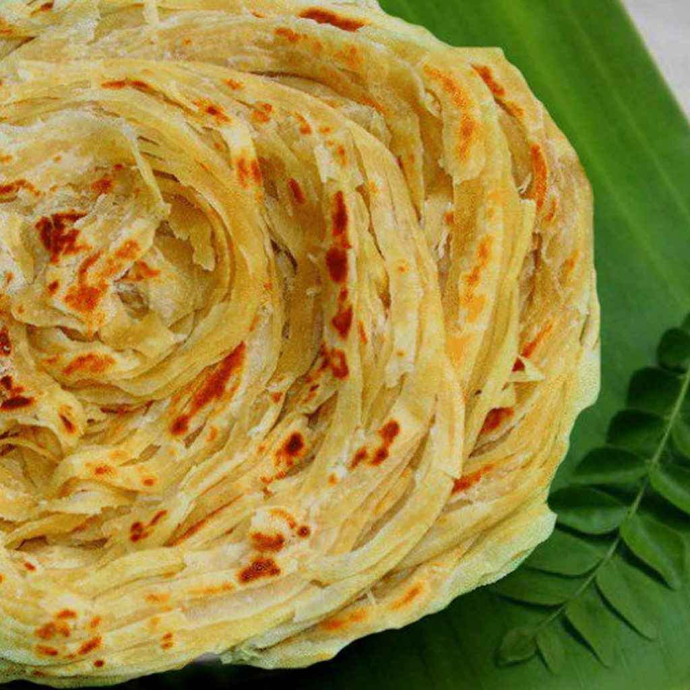

Porotta

Ingredients
- All-Purpose Flour
- Egg
- Salt & Sugar
- Oil
- Milk
- Baking Powder
Porotta is a very famous dish from Kerala. It is loved by majority of the
population. Most of the time paired with something Non-Veg like Beef, Pork, Chicken etc.
Instructions
- Firstly, in a large mixing bowl take 3 cup maida, 2 tbsp rava, 1 tbsp sugar, 1 tsp salt and 2 tbsp ghee.
- Rumble and mix well until the flour turns moist.
- Now add water and start to knead the dough.
- Add water slowly and knead to a smooth and soft dough.
- Further add 2 tbsp oil, cover and rest for 1 hour.
- After 1 hour, punch and knead the dough again.
- Knead until the dough absorbs all the oil.
- Now pinch a ball sized dough and place in a bowl.
- Add ¼ cup oil, cover and soak for 1 hour.
- Now take the ball and roll gently.
- Pull and spread as thinly as possible.
- Cut into thin strips using a sharp knife.
- Bring together the stips and pull slightly.
- Now roll spiral, making sure all the strips are intact.
- With greased hand, pat and spread the dough.
- Roll slightly thick, making sure the layers are intact.
- Now place the rolled parotta onto hot tawa. make sure to grease the tawa well.
- Cook on medium flame until the base is cooked.
- Flip over and spread ½ tsp oil.
- Cook on medium flame until both sides turn golden brown.
- Crush the parotta gently, this helps to separate the layers.
Home